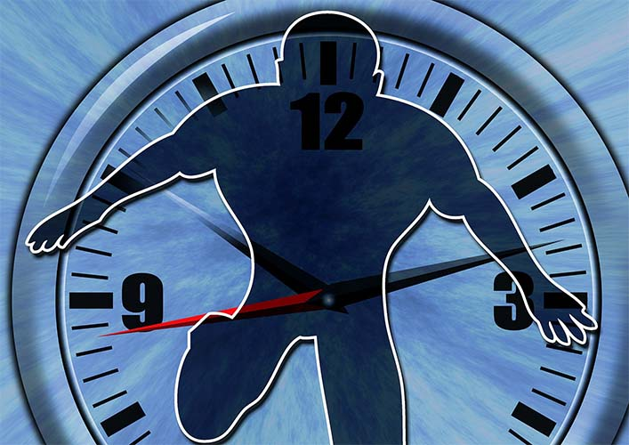

Is there a more subjective question than what is the value of time?
The answer always depends on the person's desired outcome of...life. On one's dreams and goals.
Your goals probably differ from mine, and most likely also from anybody else's.
But one thing is clear: we all have our goals to which we are aspiring and striving for. We are all running towards something. And there is but one thing we all have to face: time.
So there is no question more essential than: are you being as efficient as possible with the use of your time? (or are you wasting your time?)
The method for the answer is right in front of you: every decision should be made in accordance to your goals and anything that would distract or come in the way between you and your goals should be rejected.
Simple enough.
Then, this quick and painless exercise of choosing how to use one's time should be a piece of cake.
Would you care to give it a go?